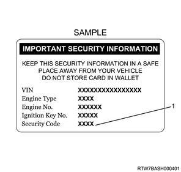
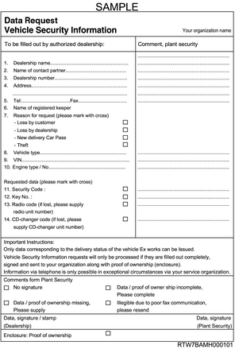

Caution
Vehicle security information card (If issued)
When resetting or reprogramming the ICU, ECM, or the transponder keys with a scan tool, you will be prompted to enter the 4-digit security code. This code is shown on the vehicle security information card issued with new vehicles. If the card is unavailable, the service department of the Isuzu distributor must be contacted in order to obtain the security code.

For new owners, distributors or dealerships must provide a vehicle security information card that shows the identification number of the owner's vehicle immobilizer system. This information is very important in case of repair or if the transponder key is lost. Dealers are responsible for providing the following three items.
Vehicle security information card for new owners
Blank vehicle security information card for reissuance
Instructions on how to use the card for the dealership
Save all the vehicle security codes as confidential data. If the vehicle security information card is lost, the data must be requested from the service department of the Isuzu distributor. This request will only be processed if accompanied by the specified form and proof of ownership. Once the data is received, it will be entered onto a blank card and given to the customer. Any unused cards should be destroyed. Instructions on filling out the Data Request Vehicle Security Information Card are as follows.
The data requested under items 1 to 10 must be provided in full, including the authorized dealership number, the vehicle identification number (VIN) and engine type/number.
The form must be completed by entering the data and signature/authorized dealership stamp and sent along with proof of ownership to the address provided in the form.
After confirming that the information is correct, the requested data should be sent by fax to the dealership that made the request.

Security code
The security code is necessary to reset or program the ICU, ECM, or the transponder keys. When a scan tool requests the security code to be entered, the ICU or ECM will go into security wait time stage if an incorrect code is entered. This wait time stage will prevent any further attempts to enter the security code until the wait time has elapsed. Should a second incorrect security code be entered after the initial wait time has elapsed, the ICU or ECM will go into a second wait time stage. The wait time will increase each time an incorrect code is entered. If the correct code is entered, the wait time will reset back to its original value of 10 seconds.
Stage 1: 10 seconds
Stage 2: 10 seconds
Stage 3: 10 minutes
Stage 4: 20 minutes
Stage 5: 40 minutes
Stage 6: 80 minutes (1 hour 20 minutes)
Stage 7: 160 minutes (2 hours 40 minutes)
Stage 8: 320 minutes (5 hours 20 minutes)
Stage 9: 640 minutes (10 hours 40 minutes)
Stage 10: 1280 minutes (21 hours 20 minutes)
Caution
Transponder key
Usually, 2 or 3 transponder keys are provided with each new vehicle. Owners requiring additional keys can receive up to a total of 5 transponder keys.
Caution
Erase Transponder Keys
The [Erase Transponder-keys] procedure must be performed with a scan tool if the following conditions are met.
Loss of transponder key by owner
Replacement of malfunctioning transponder keys
Caution
Program Transponder Keys
The [Program Transponder Keys] procedure must be performed if any of the following conditions are met.
The diagnostic chart instructs you to replace the transponder keys.
The diagnostic chart instructs you to program the transponder keys.
Reprogramming is necessary as the ICU transponder key information has been erased.
The owner has requested additional transponder keys.
Reset Immobilizer
The [Reset Immobilizer] procedure must be performed if any of the following conditions are met.
The diagnostic chart instructs you to replace the ICU.
The ICU was replaced without using spare parts.
Caution
Reset Engine Control Module
The [Reset Engine Control Module] procedure must be performed if any of the following conditions are met.
The diagnostic chart instructs you to replace the ECM.
The ECM was replaced without using spare parts.
Caution
Program Immobilizer Function
The [Program Immobilizer Function] procedure must be performed if any of the following conditions are met.
The diagnostic chart instructs you to program the ICU.
A new or reused ICU is installed.
The diagnostic chart instructs you to program the ECM.
A new ECM is installed.
The ECM is a reused part that was reset in the original vehicle.
A new or reused ICU and ECM were installed at the same time. (The transponder keys were also replaced.)
Caution
Erase Transponder Keys
1. Connect a scan tool to the DLC.
2. Turn ON the ignition switch.
3. Select the Diagnostics.
4. Select the Body.
5. Select Immobilizer.
6. Select the Additional Function.
7. Select Erase Transponder-keys.
Note
Caution
8. Turn OFF the ignition switch.
Note
Program Transponder Keys
9. Connect a scan tool to the DLC.
10. Turn ON the ignition switch.
11. Select the Diagnostics.
12. Select the Body.
13. Select Immobilizer.
14. Select the Programming.
15. Select Program Transponder-Keys.
Note
Caution
16. Turn OFF the ignition switch.
Note
Reset Engine Control Module
Caution
1. Connect a scan tool to the DLC.
2. Turn ON the ignition switch.
3. Select the Diagnostics.
4. Select the Body.
5. Select Immobilizer.
6. Select the Additional Function.
7. Select Reset Engine Control Module.
Note
Caution
8. Turn OFF the ignition switch.
Note
Reset Immobilizer
Caution
1. Connect a scan tool to the DLC.
2. Turn ON the ignition switch.
3. Select the Diagnostics.
4. Select the Body.
5. Select Immobilizer.
6. Select the Additional Function.
7. Select Reset Immobilizer.
Note
Caution
8. Turn OFF the ignition switch.
Note
Program Immobilizer Function
Caution
9. Connect a scan tool to the DLC.
10. Turn ON the ignition switch.
11. Select the Diagnostics.
12. Select the Body.
13. Select Immobilizer.
14. Select the Additional Function.
15. Select Program Immobilizer Function.
Note
Caution
16. Turn OFF the ignition switch.
Note